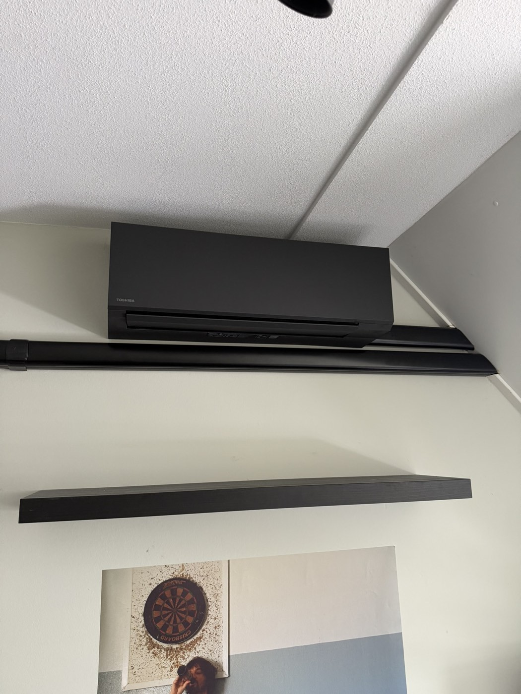
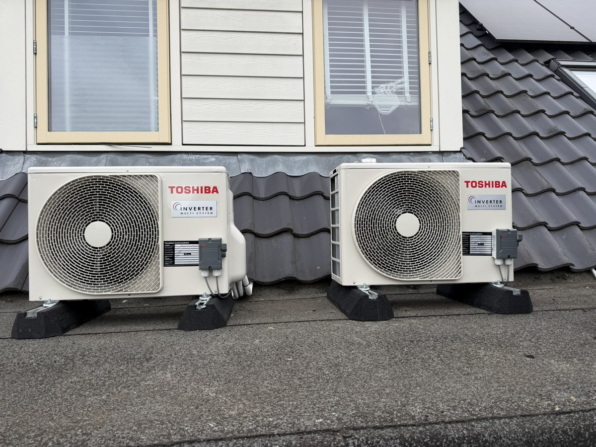
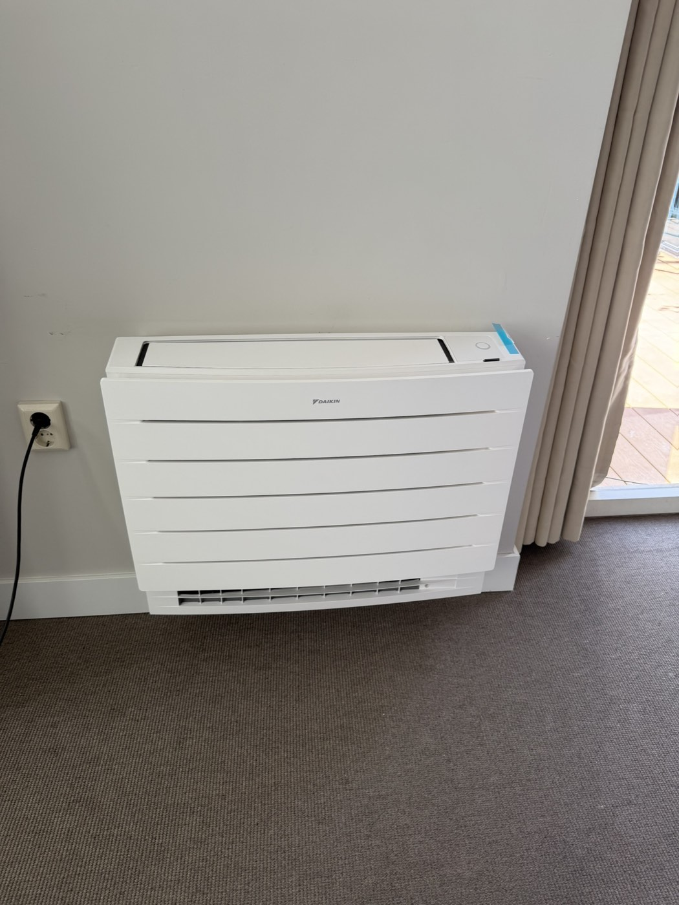
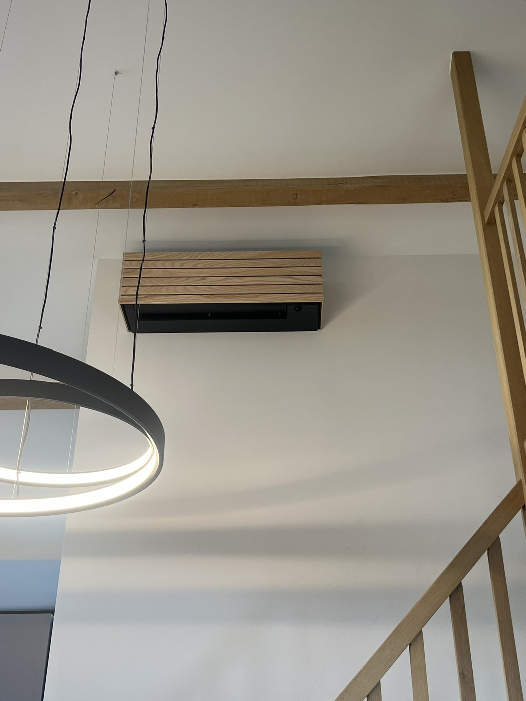
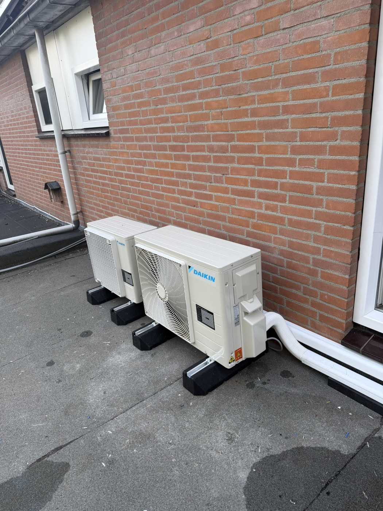
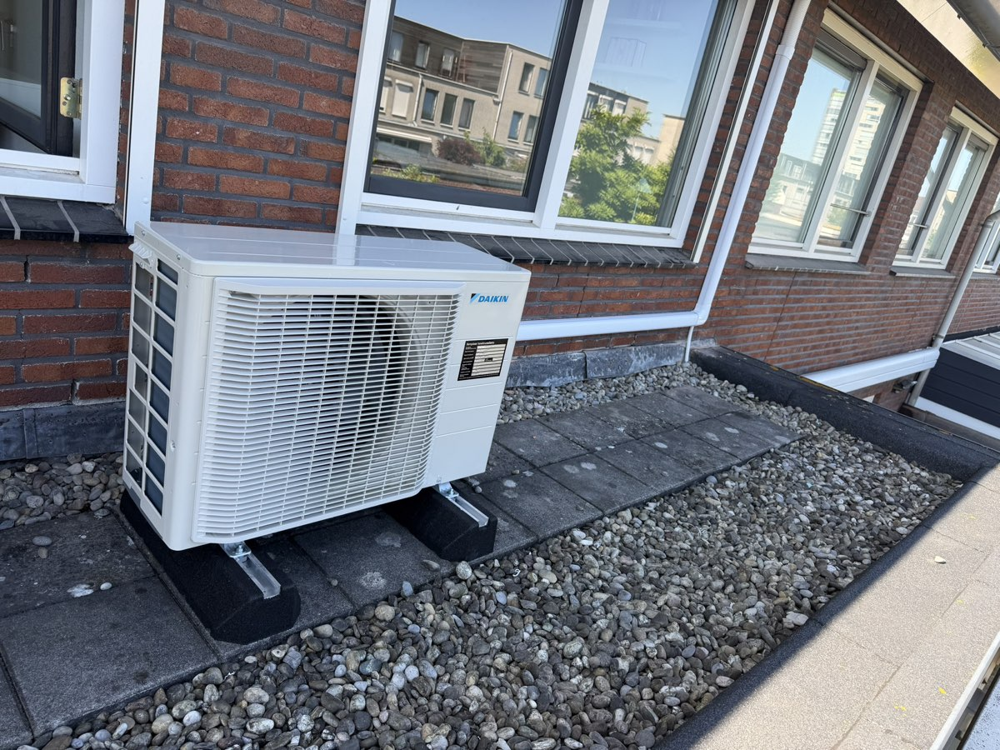
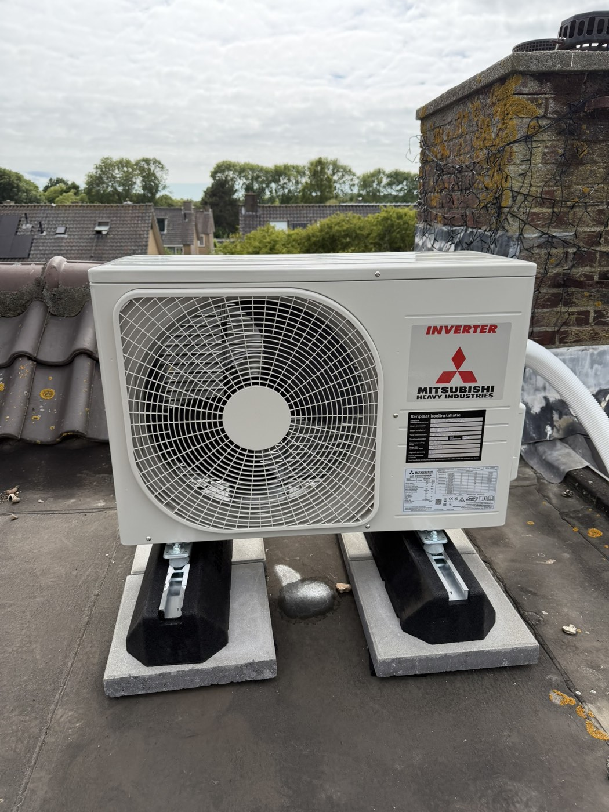

Matzwarte multi-split door drie kamers
Toshibajuni 2026Drie slaapkamers gekoeld met matzwarte binnendelen; buitendelen samen uit het zicht op de dakkapel.





Foto's houden hun echte kleur, maar krijgen één gezamenlijke "TPS-grade": iets minder verzadiging, iets lichter, een vleug petrol. De rode baksteen en het warme hout kalmeren richting het palet van de site.
Drie slaapkamers gekoeld met matzwarte binnendelen; buitendelen samen uit het zicht op de dakkapel.







Elke foto in een wit passe-partout met zachte, koel getinte schaduw — als een galerijwand. De lijst geeft élk beeld dezelfde rand, waardoor kleurverschillen als "verzameling" lezen in plaats van als ruis. Onderschriften dragen het verhaal.
Drie slaapkamers gekoeld met matzwarte binnendelen; buitendelen samen uit het zicht op de dakkapel.
In rust zijn alle foto's één petrol-monochroom — maximale rust en 100% merk. Beweeg je muis (of tik) over een foto en de echte kleuren komen terug. Eén tastvolle interactie, zoals de rest van de site.
beweeg over een foto voor echte kleurDrie slaapkamers gekoeld met matzwarte binnendelen; buitendelen samen uit het zicht op de dakkapel.
Geen harde fotoranden: elk beeld heeft gevederde randen die oplossen in de tonale kaart, plus de kalme grade uit A. Een klein technisch label (merk · maand) geeft het de "engineered" toets. Het meest atmosferisch — foto's worden onderdeel van de pagina in plaats van erop geplakt.
Drie slaapkamers gekoeld met matzwarte binnendelen; buitendelen samen uit het zicht op de dakkapel.